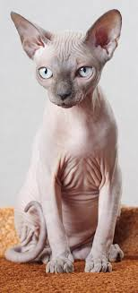

Popular Cat Breeds

Siamese: Known for their striking blue eyes and short coat, Siamese cats are vocal and affectionate.

Maine Coon: One of the largest domestic cat breeds, known for its bushy tail and friendly personality.

Persian: With their long, luxurious fur and calm temperament, Persian cats make great lap companions.

Sphynx: A hairless breed with a unique appearance, known for their social and energetic nature.